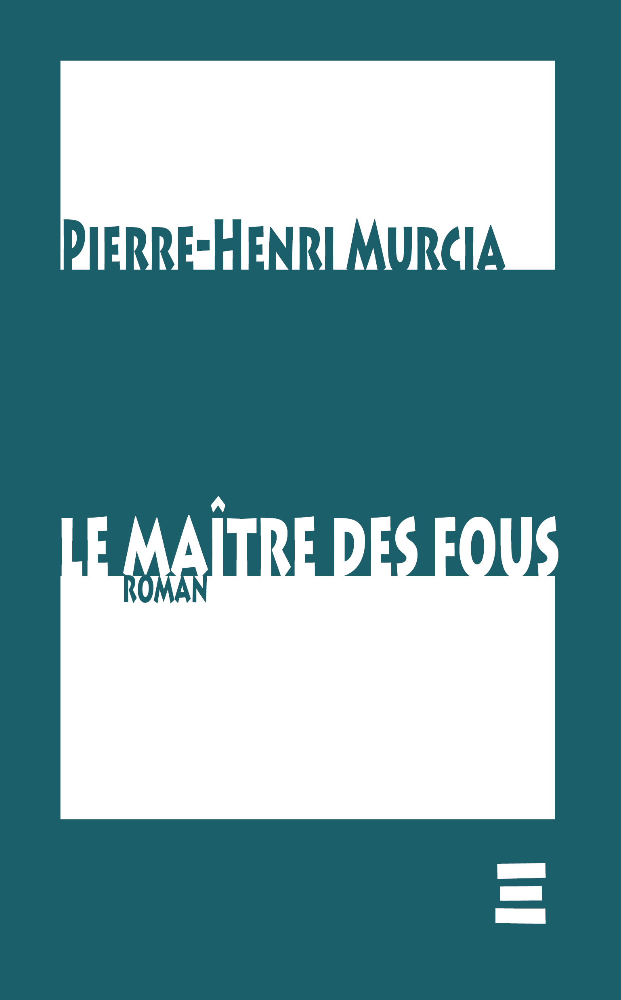

Le Maître des fous
Pierre-Henri Murcia
Paraît début avril 2026Fernando Carvalho est un imposteur consentant : cet homme qui se prétend agent des services secrets américains se retrouve un jour convoqué pour l'être vraiment — deux hommes du FSB l'attendent avec une seringue. Ils ne veulent pas vraiment lui. Ils veulent Nina Kazakova.
Nina est femme mystérieuse aux origines russes, peut-être espionne du FSB, peut-être maîtresse cachée du président Popov — peut-être les deux, peut-être ni l'un ni l'autre. Fasciné par elle depuis qu'il l'a croisée chez les parents de son beau-fils, Fernando se laisse happer dans le dédale d'une Russie légendaire, folklorique, manipulée : celle où le mensonge historique s'accouple au mensonge érotique pour engendrer une nouvelle version de l'Histoire.
En toile de fond : le mystère de la mort du tsar Alexandre Ier et le destin énigmatique du moine errant Fiodor Kouzmitch — figure historique dont l'historienne Marina Gromyko a montré qu'elle est bien plus qu'une légende.
Le récit est construit en tiroirs emboîtés, poupées russes narratives dont on ne découvre le véritable narrateur qu'à la dernière page — à la manière de la Shéhérazade des Mille et une nuits, qui multiplie les histoires pour échapper à la mort promise à l'aube. Le Maître des fous est une comédie de l'imposture universelle, une parodie de la guerre froide qui n'a jamais vraiment cessé, un roman d'amour où chaque mensonge est la condition d'un amour possible.
Ce qu'on dit de Pierre-Henri Murcia
« Cette trouvaille d'un éditeur localement transcendant s'impose à lire d'une traite. »Martine Chifflot, autrice et réalisatrice — à propos de L'écume de tes yeux (ELT, 2026)
« Pierre-Henri Murcia a écrit, en creux, une réponse à Camus. J'en suis sortie consolée. »Babelio — à propos de L'écume de tes yeux (ELT, 2026)
« Un premier roman d'une ambition rare dans le paysage littéraire actuel. »Babelio — à propos de Comment rater sa vie de couple à coup sûr (ELT, 2025)
L'auteur
Pierre-Henri Murcia est né en 1965 à Noisy-le-Sec et a grandi du côté de Pézenas. Ouvrier du bâtiment et œuvrier en littérature, il s'emploie depuis des années à faire de la théorie mimétique de René Girard — ce déchiffrement impitoyable du désir et du mensonge — une matière romanesque vivante et accessible. Le Maître des fous est son premier roman, achevé en 2022 et auto-imprimé alors à quelques exemplaires. Il précède ses deux publications aux éditions Localement Transcendantes : Comment rater sa vie de couple à coup sûr (2025) et L'écume de tes yeux (2026). C'est ici sa première édition publique.
Le Maître des fous paraît début avril 2026.
Voir le catalogue